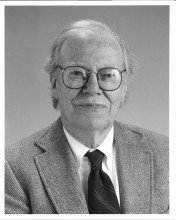

Please note: the AAS Obituaries are temporarily being hosted on this website while their full content is being ingested into the PubPub publishing platform newly adopted by the Bulletin of the American Astronomical Society. When the migration is complete, your existing links will take you to the final, migrated content. Contact peter.williams@aas.org with any questions.
William C. Martin (1929-2013)
William Clyde Martin, one of the leading atomic spectroscopists in the world, passed away from complications of pneumonia on September 15, 2013, at the age of 83. Martin led the Atomic Spectroscopy Group at the National Institute of Standards and Technology (NIST) for 36 years.
Bill Martin was born in Cullman, Alabama, in 1929. He graduated from the University of Richmond in 1951 and went on to graduate studies at Princeton University. He received a Master’s Degree in physics in 1953 and a Ph. D. in physics in 1956, both from Princeton. His thesis advisor was the well-known Professor Allen Shenstone. Bill’s thesis concerned the spectrum and energy levels of neutral and singly ionized phosphorus. This was a challenging project because of the difficulty of producing a light source to excite the spectrum of phosphorus. But this was successful and served to introduce Bill to the vacuum ultraviolet.
After graduating from Princeton, Bill joined the National Bureau of Standards, now NIST. He was hired by William F. Meggers, famous for his many investigations of atomic spectra. In 1962 Bill was appointed Chief of the Atomic Spectroscopy Section, and he served in this position until his retirement in 1998. After retiring, Bill continued his research, first as a contractor and then as NIST Scientist Emeritus.
Bill oversaw the 1965 move of the group from downtown Washington, DC to Gaithersburg, Maryland. He was intimately involved in planning the new spectroscopy laboratory. To equip the new lab, a number of new instruments had to be designed and built. Foremost among them were normal- and grazing-incidence spectrographs for observation of the VUV. The spectrographs that were built became the basis for numerous ground-breaking publications in atomic spectra. In the 1970’s Bill was instrumental in turning the use of these instruments to the generation of data for controlled nuclear fusion research. Bill had become familiar with this program while at Princeton, where some of the first stellerators and tokamaks were being developed.
Another abiding interest of Bill’s was the compilation and dissemination of atomic data. The work had begun at NBS in 1945 when Meggers hired Charlotte Moore Sitterly to set up a Data Center to compile spectroscopic data from the literature. This resulted in the classic volumes of Atomic Energy Levels published in 1949-1958. When Bill became head of the group, he involved various members in expanding and updating Moore’s compilations. This gave rise to many highly-regarded publications, most of which appeared in the newly-formed Journal of Physical and Reference Data (JPCRD), edited by David Lide.
Missing from Moore’s compilations were data for the rare earth elements. As a result of advances in this area that had come about from new technologies – both experimental and theoretical – there had developed a large body of data that needed to be organized and systemized. Bill himself had contributed greatly to this area through his analysis of the energy level structure of neutral cerium. Bill’s 1963 paper established the electronic ground configuration of neutral cerium as 4f5d6s2. Prior to that, it was widely taken to be 4f2 6s2. Bill personally led the new compilation effort, resulting in publication of “Atomic Energy Levels – The Rare-Earth Elements,” by W. C. Martin, R. Zalubas, and L. Hagan. This volume has served as the bible for rare earth energy levels since its publication in 1978. In recognition of this work Bill was awarded the U. S. Department of Commerce Silver Medal (1968) and the Gold Medal (1981). In 1983 he was awarded the William F. Meggers Award of the Optical Society of America. In 1992 he was awarded the NIST Allen V. Astin Measurement Science Award and in 1997 the Office of Measurement Services Award.
With the retirement of Charlotte Moore Sitterly in 1968, Bill took over as Director of the Atomic Spectroscopy Data Center and became even more deeply committed to critical evaluation and compilation of atomic data. Bill directed much of the program to provide data for astronomy, probably his area of greatest personal interest. He regularly attended meetings of the American Astronomical Society and the International Astronomical Union. He served as Chairman of the International Astronomical Union Working Group on Atomic Spectra and Wavelength Standards, 1973-1997. At one of the AAS meetings, Bill learned of potential problems with wavelength calibration of spectrographs on the Hubble Space Telescope, under construction at the time. This led to a NIST program to provide a suitable wavelength calibration standard for HST. The light source that was developed, a platinum/neon hollow cathode with wavelengths provided by NIST has been used on Hubble from the time of its launch in 1990 until today.
With the coming of the internet, Bill had the vision to realize that the future of data dissemination would be via online databases. Together with W. Wiese, he undertook organization of the NIST Atomic Spectra Database. This database went online in 1995 and has continued to expand since then. It is now in version 5.1, experiencing about 1000 downloads per day.
Bill published over 65 papers in atomic spectroscopy. Together with W. Wiese, he wrote the chapter on Atomic Spectroscopy for what is now the Springer Handbook of Atomic, Molecular, and Optical Physics. His last publication was a scholarly work with E. Arimondo of Italy and C. W. Clark of NIST on “Ettore Majorana and the Birth of Autoionization.”
After coming to Washington, Bill met and married Dolores Moyano. They bought a house in Bethesda and had two sons, Eric and Christian, who survive him. Their home was the site of many warm gatherings. Their dinner parties always included interesting guests ranging from politicians to poets to journalists to scientists. Dolores Martin passed away in 2003.
Bill loved opera, especially the music of Richard Wagner. He traveled the world to see performances of Wagner’s Der Ring des Nibelungen.
Bill was a Fellow of the American Physical Society, the Optical Society of America, and the American Association for the Advancement of Science. He served as Associate Editor and Technical Editor of the Journal of the Optical Society of America.
Bill’s intellectual presence and sense of humor will be greatly missed. He was a genuine force for excellence at NIST.
Obituary written by: Joseph Reader (National Institute of Standards and Technology), David R. Lide (National Institute of Standards and Technology)
BAAS Citation: BAAS, 2013, 45, 012